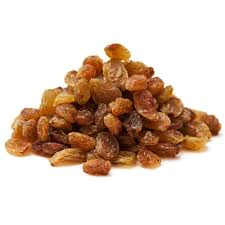
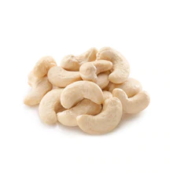
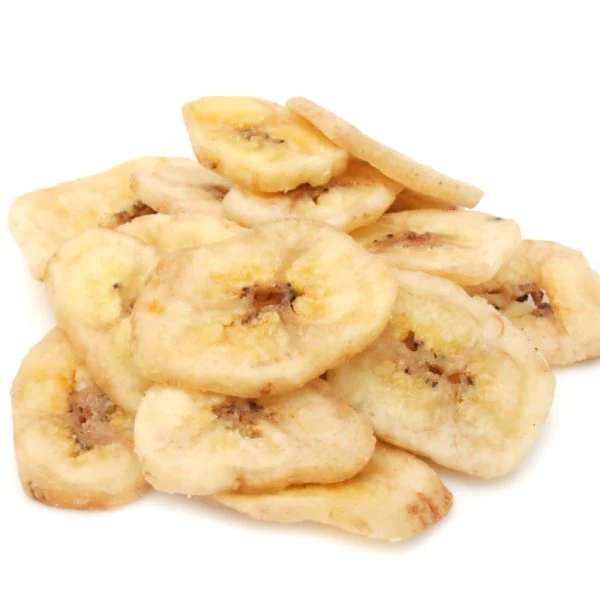

Fruits sec

Grains de raisin foncés séchés au soleil. Utilisés tels quels par les sportifs afin de les aider dans l’effort. En cuisine on les emploie dans la fabrication de sauces (Boulets à la Liégeoise) ou bien dans les desserts. Ils rendront délicieuses vos céréales et mueslis.

Noix de cajou décortiquées et blanchies (origine: Vietnam, Inde , Brésil , Cambodge Afrique du Sud, Mozambique).
Présence de fruits à coques. Peut contenir des traces d'arachides, gluten, lait, œufs, soja, moutarde, sésame, céleri, crustacés et mollusques.

Tranches de bananes frites et enrobées de miel. Consommé telle quelle pour des petits en-cas plaisir.
Peut contenir des traces de fruit à coque, arachides, gluten, lait, œufs, soja, moutarde, sésame, céleri, crustacés et mollusques.